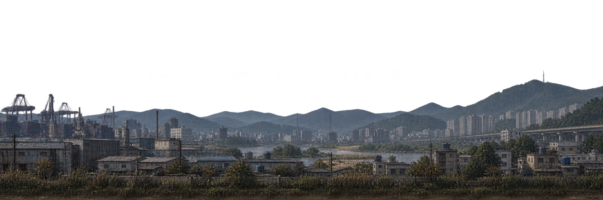
부산 기준 후보부산 감천 부두 → 양산 고가차도
항만 창고가 드문드문 줄고 강변 풀밭·산기슭 주거지가 섞인다. 강과 능선은 계속 남는다.
풍경 재생 →전체 확장 초안 · 실제 게임 미적용
58개 장소 · 78개 길
새 후보 5개 + 부산 기준 후보 + 기존 큰 원본 72개
마음에 든 부산의 색감과 느린 원경을 전 구간 비교에 확장했습니다. 지역의 개성은 남기고, 세 장의 그림이 바뀌는 대신 한 장 안을 이동합니다.
전체를 새로 그리거나 실제 지형으로 검증 완료한 상태는 아닙니다. 기존 원본 72개는 새 지형 방향과 대조할 비교본입니다. 게임 반영은 초안 검토 뒤 별도로 진행합니다.

부산 기준 후보항만 창고가 드문드문 줄고 강변 풀밭·산기슭 주거지가 섞인다. 강과 능선은 계속 남는다.
풍경 재생 →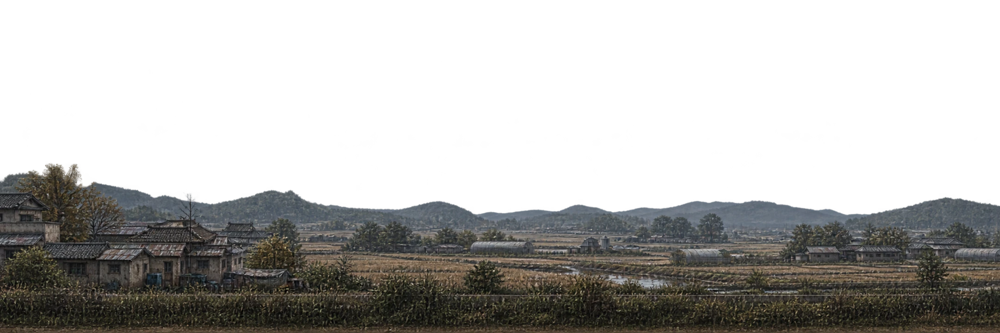
새 풍경 후보낮은 시장 지붕을 벗어나 수로·논밭이 넓어진다. 낮은 먼 구릉을 끝까지 유지한다.
풍경 재생 →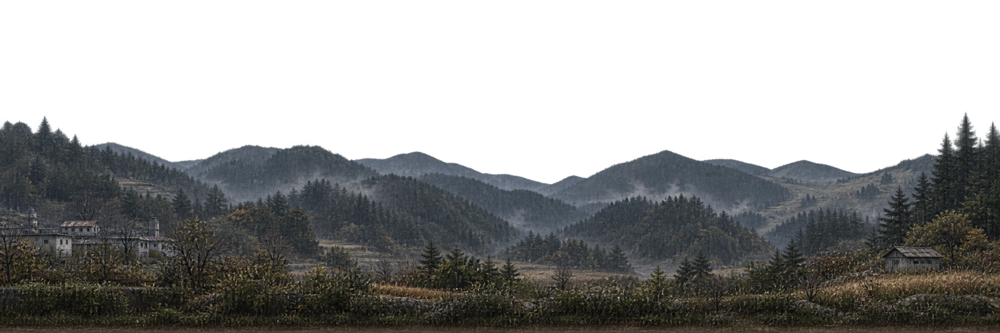
새 풍경 후보산자락 취락에서 숲 능선과 작은 고지 개활지로 이어진다. 눈 덮인 암봉 대신 둥근 산줄기를 유지한다.
풍경 재생 →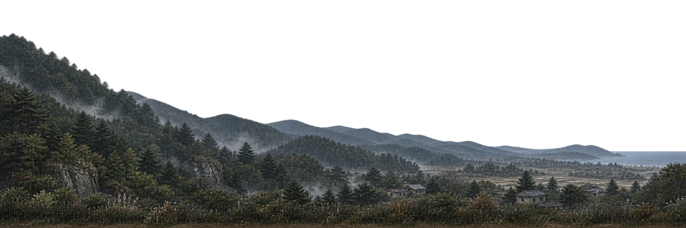
새 풍경 후보숲 능선이 조금씩 낮아지며 먼 해안 저지대가 열린다. 바다는 끝 쪽에서만 좁게 보인다.
풍경 재생 →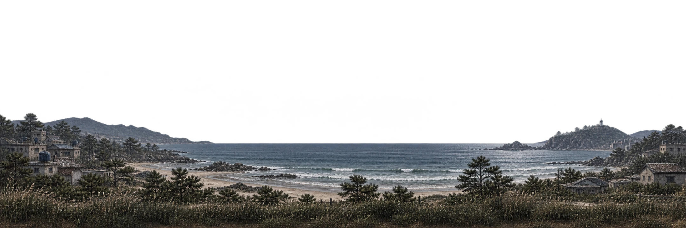
새 풍경 후보모래해안·해송·낮은 취락이 오래 이어진다. 같은 바다 수평선 안에서 마을 밀도만 바뀐다.
풍경 재생 →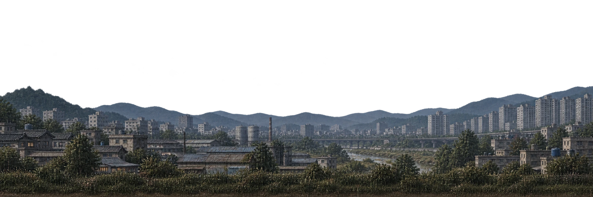
새 풍경 후보낮은 주거·작업장 사이에 아파트가 차츰 늘어난다. 같은 구릉과 수변 축을 길게 유지한다.
풍경 재생 →원본의 좌→우 제작 방향으로 표기했습니다. 각 길에서 역방향도 볼 수 있습니다.
항만 창고가 드문드문 줄고 강변 풀밭·산기슭 주거지가 섞인다. 강과 능선은 계속 남는다.
풍경 재생 →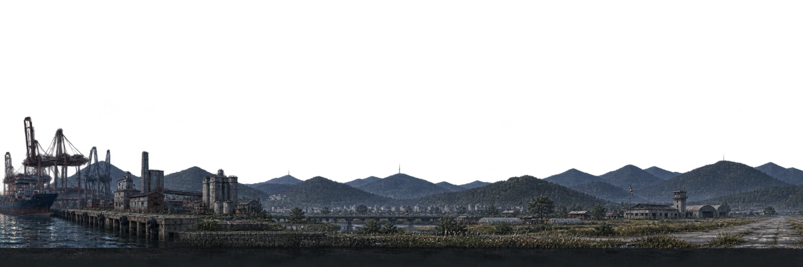
기존 큰 원본 재구성항만의 낮은 시설이 수로와 들판으로 이어진다. 평지가 넓어지되 산을 새로 크게 세우지 않는다.
풍경 재생 →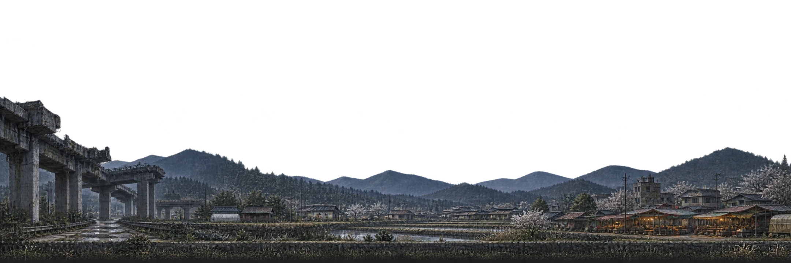
기존 큰 원본 재구성강변 시가지가 농지와 낮은 취락으로 느슨해진다. 같은 하천 골짜기를 따라간다.
풍경 재생 →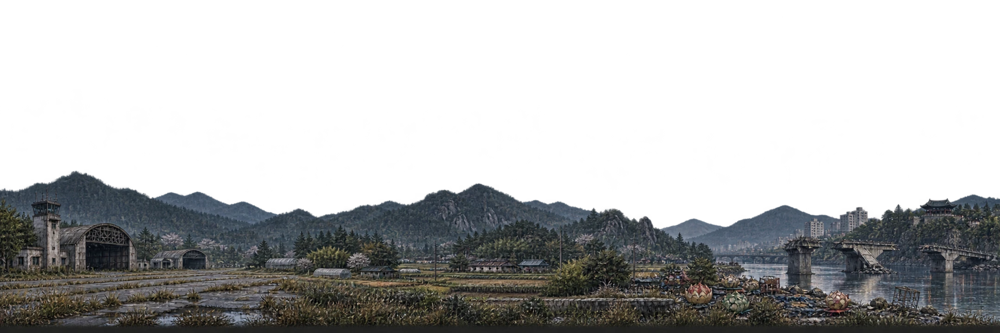
기존 큰 원본 재구성하류 평지에서 구릉 사이 농경지를 거쳐 강변 분지로 이어지는 긴 구간을 압축한다.
풍경 재생 →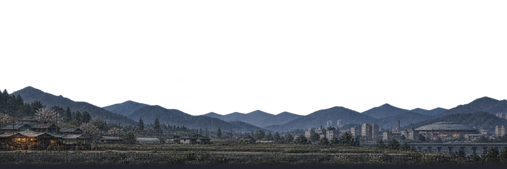
기존 큰 원본 재구성농경지와 창고가 차츰 촘촘해지고 분지 시가지로 이어진다. 산지 크기는 급히 바꾸지 않는다.
풍경 재생 →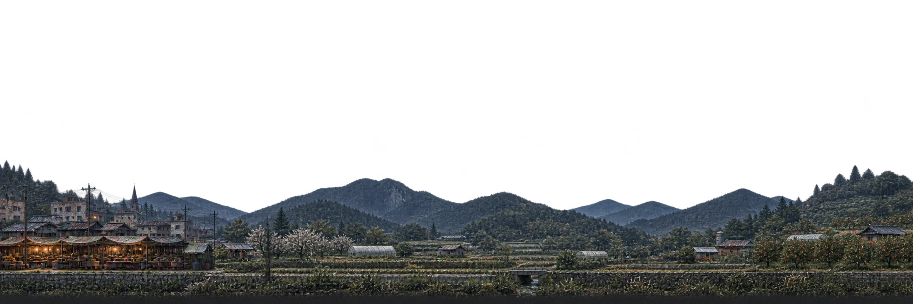
기존 큰 원본 재구성강변 농지에 과수원이 섞이며 낮은 취락이 바뀐다. 새로운 산악 세계로 전환하지 않는다.
풍경 재생 →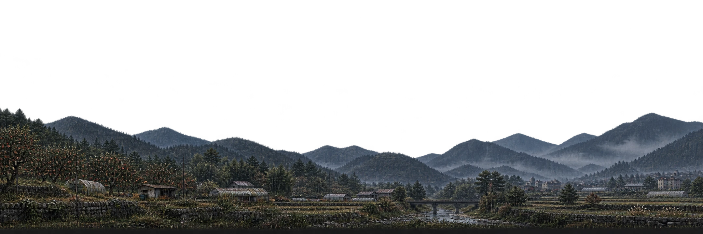
기존 큰 원본 재구성과수원 사이로 분지를 감싼 산이 조금씩 가까워진다. 산줄기는 연속된 층으로 남긴다.
풍경 재생 →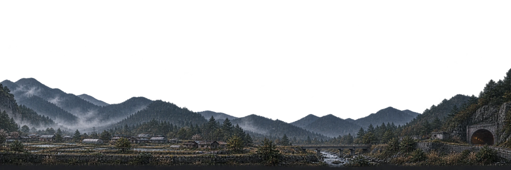
기존 큰 원본 재구성분지 농지가 좁아지고 숲 골짜기가 깊어진다. 터널은 마지막의 작은 단서다.
풍경 재생 →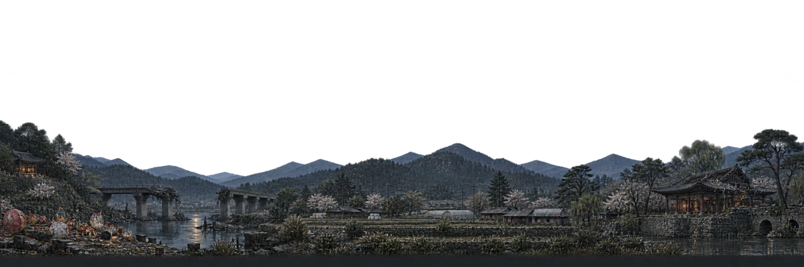
기존 큰 원본 재구성강변 취락 뒤로 산간 농지가 이어지고 골짜기 안의 분지가 열린다. 수계는 미술적으로 압축한다.
풍경 재생 →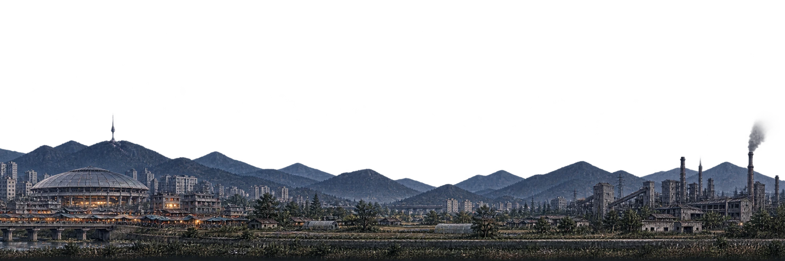
기존 큰 원본 재구성낮은 공장과 강변 저지대가 계속된다. 먼 산은 유지하고 공장 배치만 달라진다.
풍경 재생 →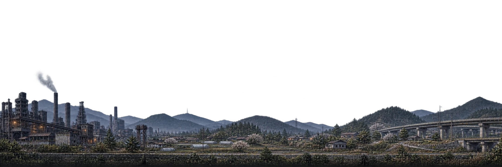
기존 큰 원본 재구성산업지 지붕이 줄고 내륙 농경지와 교통 시설이 늘어난다. 하천 골짜기의 폭을 점진적으로 좁힌다.
풍경 재생 →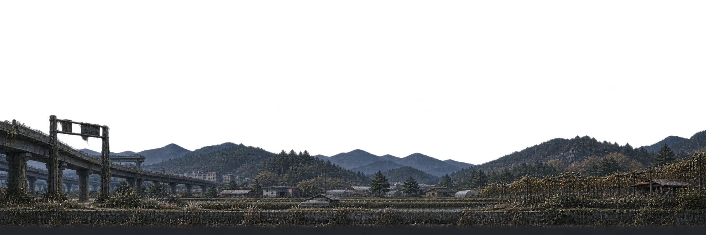
기존 큰 원본 재구성갈림길 주변 취락에서 낮은 산골 과수지로 이어진다. 능선의 결을 유지한다.
풍경 재생 →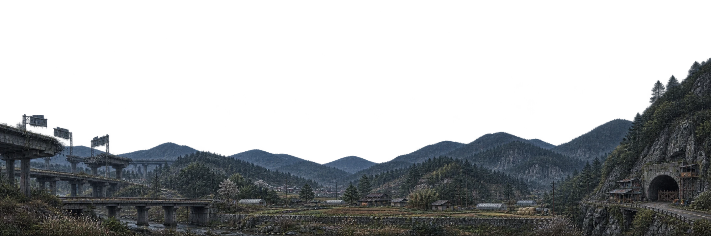
기존 큰 원본 재구성완만한 구릉이 숲 골짜기로 깊어진다. 여러 고개를 한 장면으로 순간 교체하지 않는다.
풍경 재생 →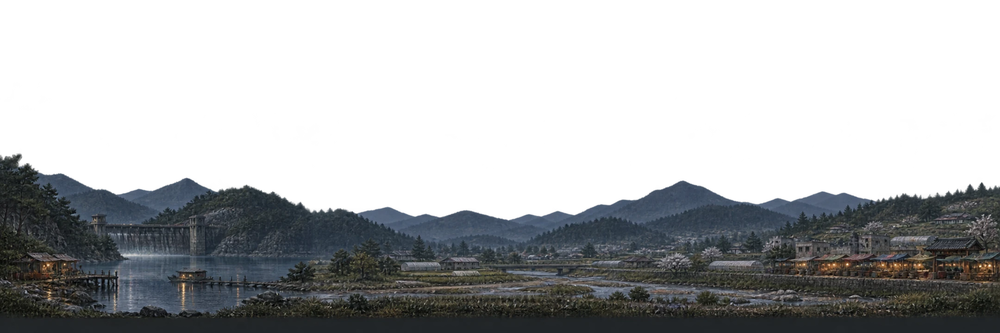
기존 큰 원본 재구성작은 호수의 물가가 마을 농지로 이어진다. 거대한 바다나 별도 항만을 만들지 않는다.
풍경 재생 →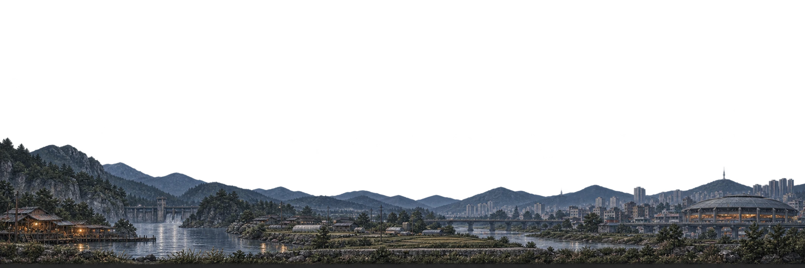
기존 큰 원본 재구성호숫가 숲이 낮은 농지와 분지 외곽으로 이어진다. 도시 실루엣은 조금씩 늘린다.
풍경 재생 →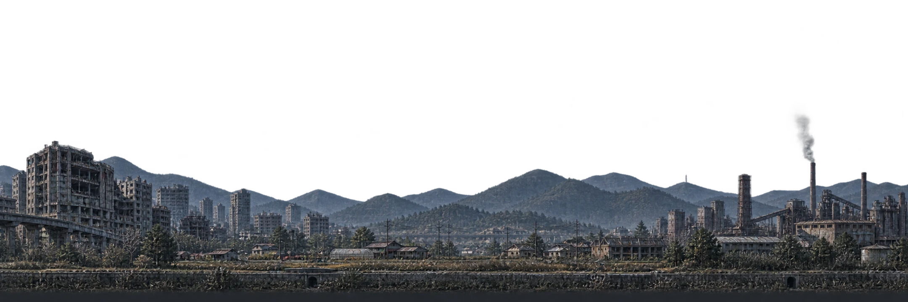
기존 큰 원본 재구성구미 산업지의 길을 유지한 채 빈 상업 건물만 가까워진다. 짧은 곁길에서 생태를 바꾸지 않는다.
풍경 재생 →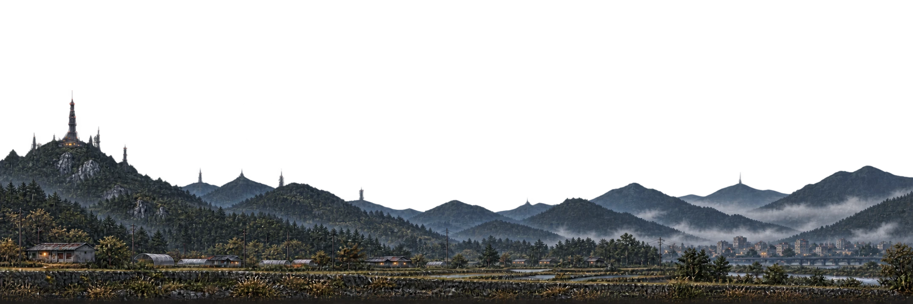
기존 큰 원본 재구성분지 옆 능선의 숲을 유지하며 작은 통신탑을 드러낸다. 짧은 우회로에 만년설은 없다.
풍경 재생 →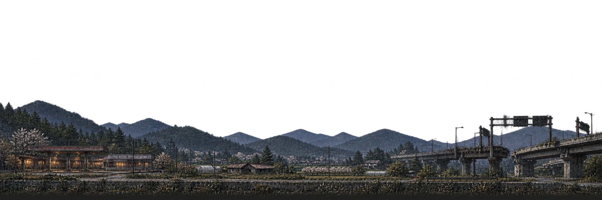
기존 큰 원본 재구성갈림길 주변 낮은 구릉과 도로를 따라 휴게소 지붕이 보인다. 짧은 길의 변화량은 작게 둔다.
풍경 재생 →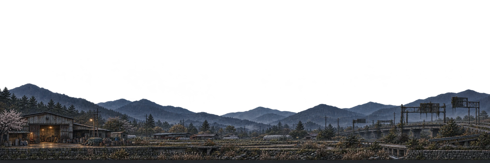
기존 큰 원본 재구성김천 근교 구릉의 작은 창고와 공터가 마을 외곽으로 이어진다. 공단 도시로 확대하지 않는다.
풍경 재생 →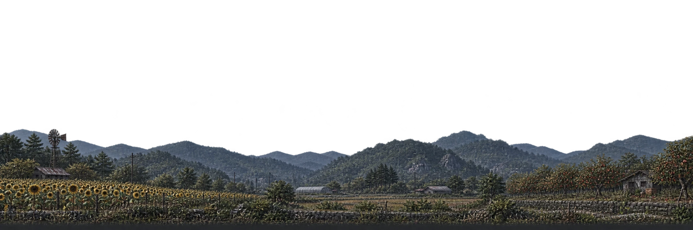
기존 큰 원본 재구성같은 과수·농경지의 일부만 밭으로 달라진다. 개화기를 고정하지 않는다.
풍경 재생 →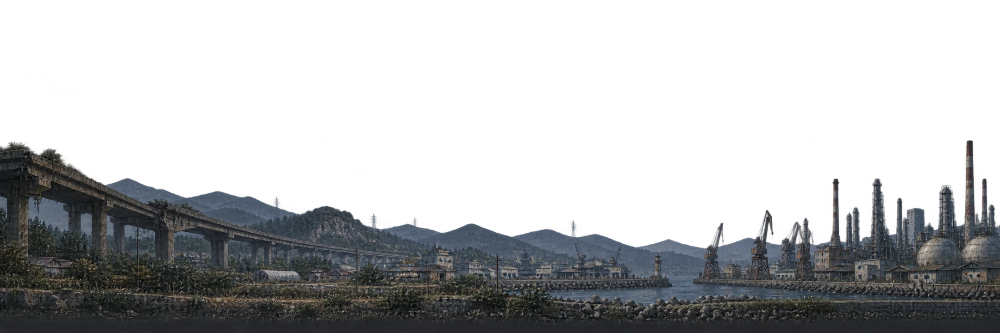
기존 큰 원본 재구성산기슭 취락과 구릉 사이 산업시설이 점진적으로 늘어난다. 갑자기 바다 절벽으로 바뀌지 않는다.
풍경 재생 →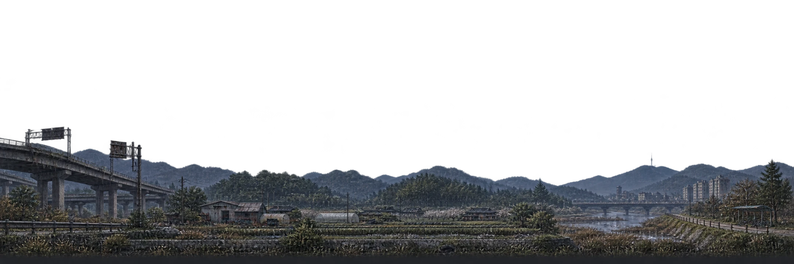
기존 큰 원본 재구성내륙 농지·낮은 취락이 넓은 강변 골짜기로 이어진다. 산은 배후에 남는다.
풍경 재생 →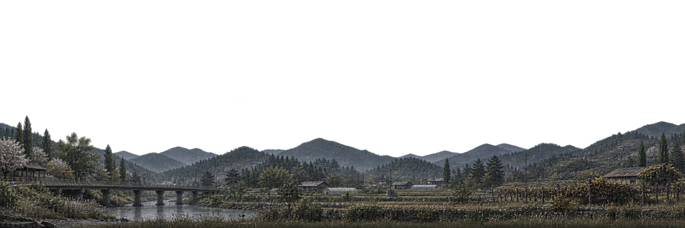
기존 큰 원본 재구성강변 평지에서 숲 구릉 사이 과수농지로 이어진다. 반복되는 둥근 능선으로 연결한다.
풍경 재생 →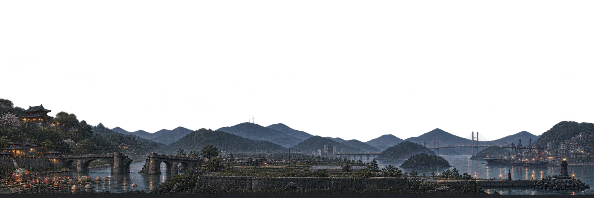
기존 큰 원본 재구성내륙 강변과 구릉 사이 취락이 남해 만의 항만으로 열린다. 작은 반도·섬은 멀리 둔다.
풍경 재생 →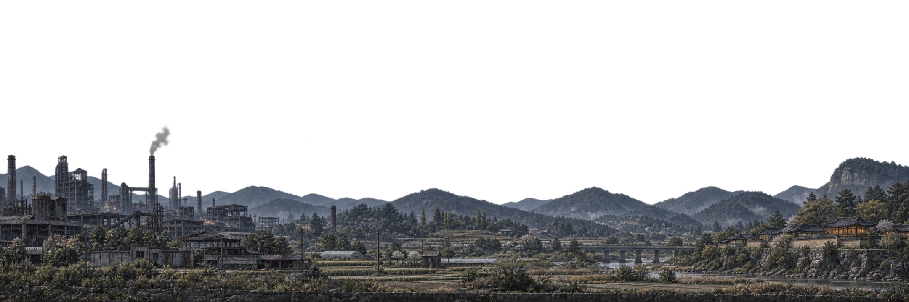
기존 큰 원본 재구성강 주변 산업지에서 농경지와 상류 분지로 이어진다. 마을 지붕만 지역에 맞게 달라진다.
풍경 재생 →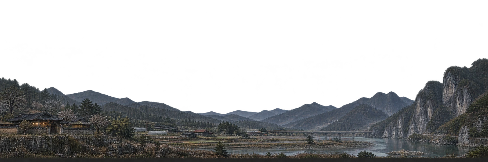
기존 큰 원본 재구성강 골짜기와 숲 고개가 반복되고 산 사이 수변이 좁아진다. 강줄기를 모두 같은 강으로 단정하지 않는다.
풍경 재생 →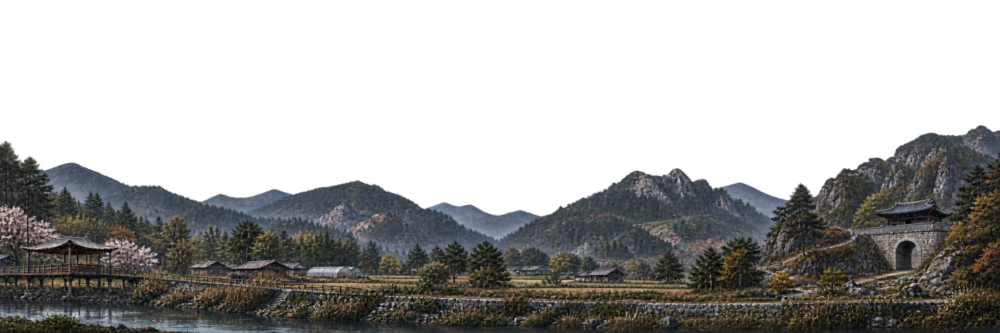
기존 큰 원본 재구성넓은 농경지가 점차 숲 골짜기로 좁아진다. 고갯길이 배후에서 천천히 가까워진다.
풍경 재생 →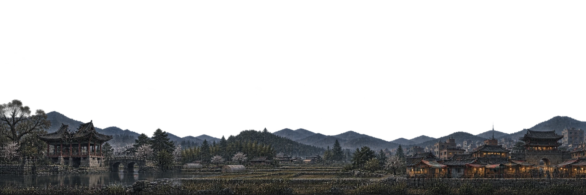
기존 큰 원본 재구성분지 농경지와 작은 마을이 이어지다가 도시 지붕의 밀도만 높아진다.
풍경 재생 →낮은 시장 지붕을 벗어나 수로·논밭이 넓어진다. 낮은 먼 구릉을 끝까지 유지한다.
풍경 재생 →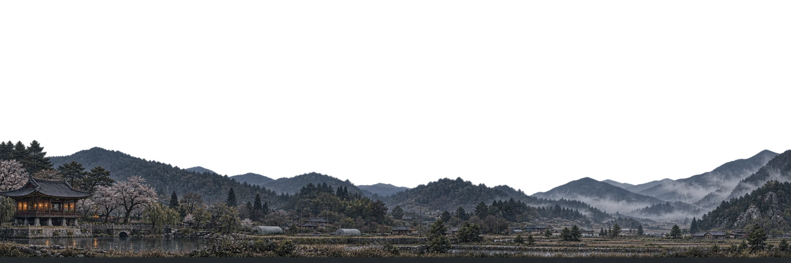
기존 큰 원본 재구성분지 사이 숲 고개를 지나 다시 농지가 열린다. 알프스형 암봉 대신 둥근 산을 겹친다.
풍경 재생 →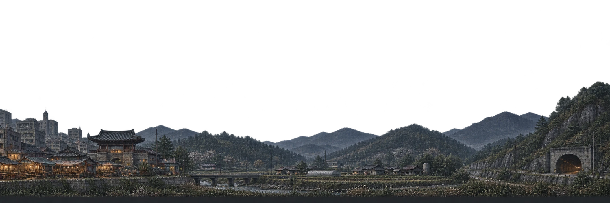
기존 큰 원본 재구성도시 외곽 농지가 점차 산지 계곡으로 좁아진다. 고도 변화는 연속된 능선으로 보인다.
풍경 재생 →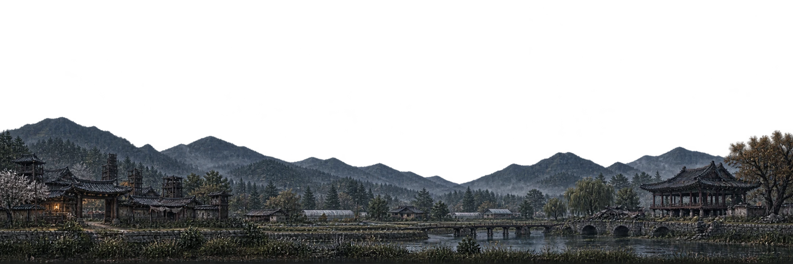
기존 큰 원본 재구성분지 농지와 낮은 목조 지붕이 이어진다. 시대극 세트장을 실제 거대 성곽 도시로 바꾸지 않는다.
풍경 재생 →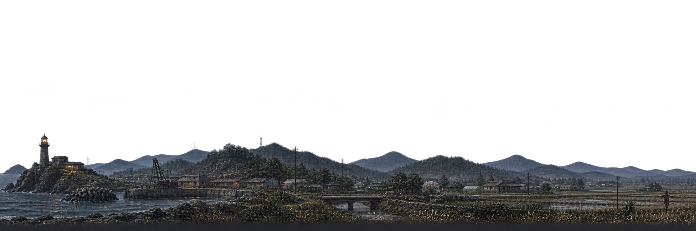
기존 큰 원본 재구성서해 저지대와 논산 평야를 연결한 가상 압축 길이다. 실제 15km 도로 재현으로 취급하지 않는다.
풍경 재생 →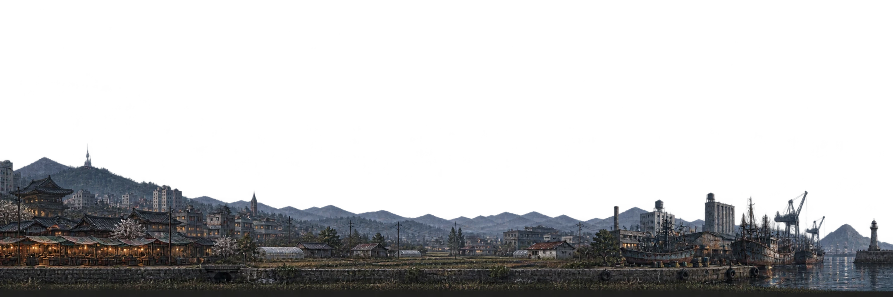
기존 큰 원본 재구성내륙 분지 외곽에서 서쪽 저지대가 넓어진다. 항구는 도착 쪽의 낮은 구조물로 암시한다.
풍경 재생 →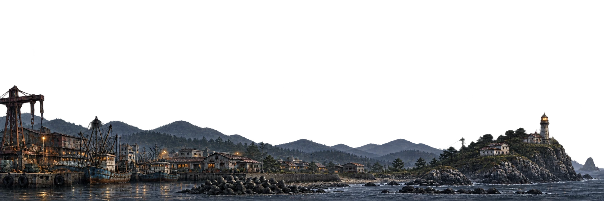
기존 큰 원본 재구성하구 항만 시설이 줄고 갯벌·해안 풀밭이 늘어난다. 서해를 동해 절벽으로 바꾸지 않는다.
풍경 재생 →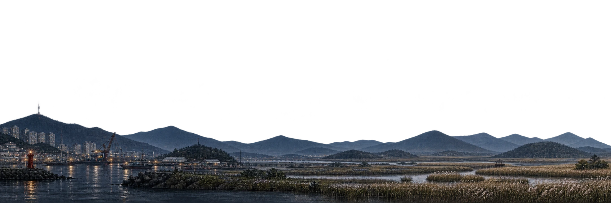
기존 큰 원본 재구성항만 주변 구릉에서 잔잔한 만과 하구 저지대로 이어진다. 동해의 직선 모래해안과 구별한다.
풍경 재생 →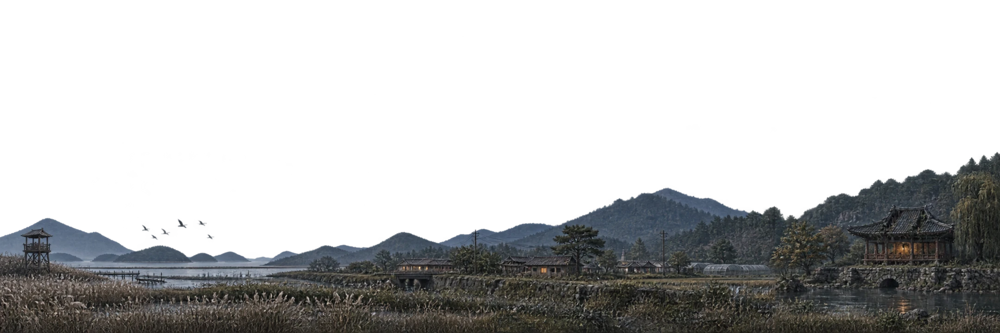
기존 큰 원본 재구성하구 농지를 벗어나 숲 골짜기와 내륙 분지로 이어진다. 산이 가까워지는 시간을 충분히 둔다.
풍경 재생 →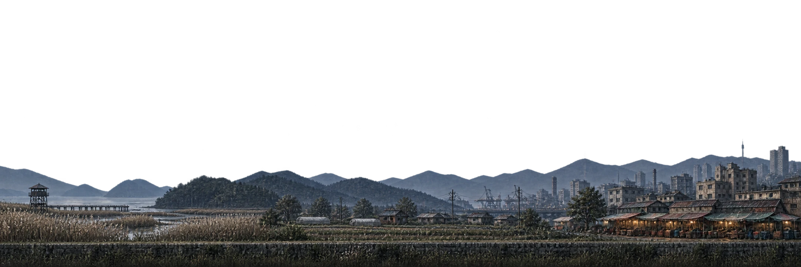
기존 큰 원본 재구성농경지·구릉이 반복되다가 분지 시가지 밀도가 늘어난다. 습지와 도시를 단번에 바꾸지 않는다.
풍경 재생 →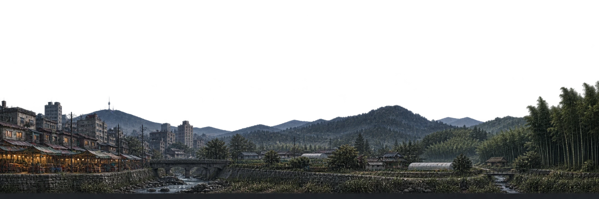
기존 큰 원본 재구성도시 외곽 지붕이 줄고 밭·대숲이 늘어난다. 대숲을 거대한 별도 생물군계로 바꾸지 않는다.
풍경 재생 →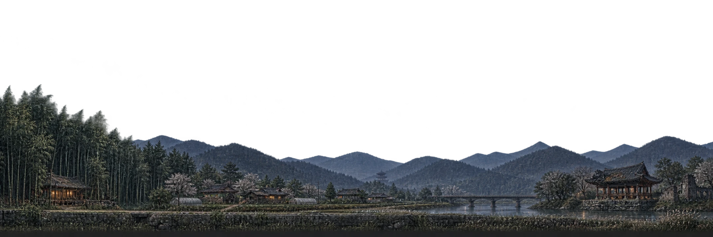
기존 큰 원본 재구성농지와 낮은 취락에서 숲 고개를 거쳐 분지가 열린다. 산의 높이는 단계적으로 변한다.
풍경 재생 →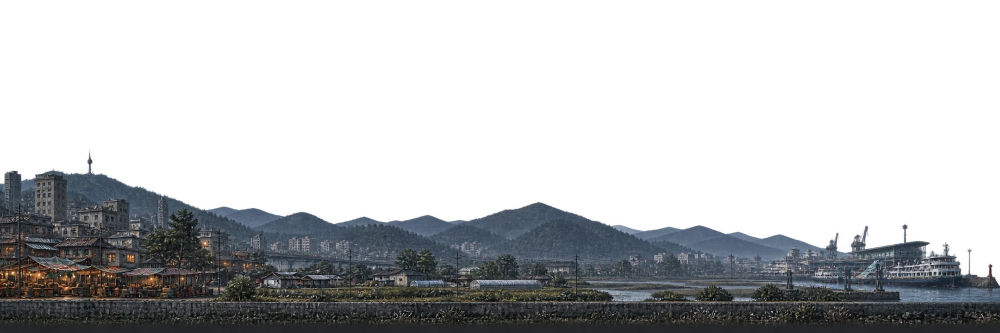
기존 큰 원본 재구성분지 외곽에서 넓은 서남부 저지대와 하구 쪽으로 이어진다. 물과 섬은 끝 쪽의 먼 층이다.
풍경 재생 →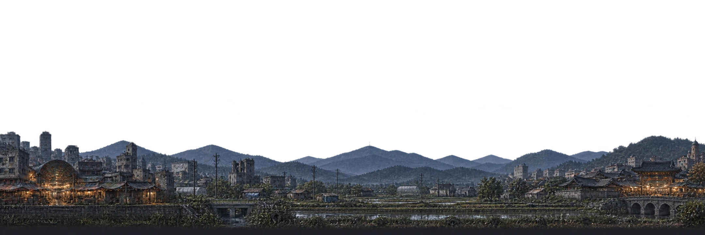
기존 큰 원본 재구성구릉 사이 논밭과 작은 도시 외곽이 반복된다. 긴 길에서도 채도·날씨를 일정하게 유지한다.
풍경 재생 →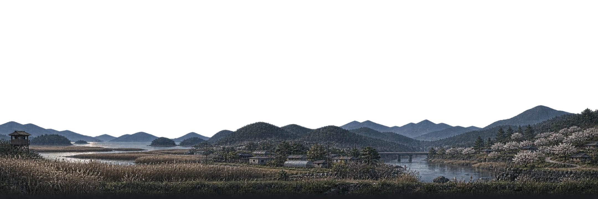
기존 큰 원본 재구성하구 농지와 구릉 사이 과수원을 따라 강변으로 이어진다. 매화 만개는 계절 선택 없이는 고정하지 않는다.
풍경 재생 →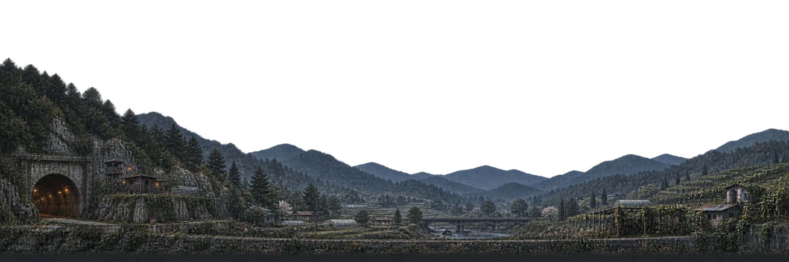
기존 큰 원본 재구성숲 골짜기가 조금 열리며 과수원과 포도밭이 늘어난다. 같은 둥근 능선을 유지한다.
풍경 재생 →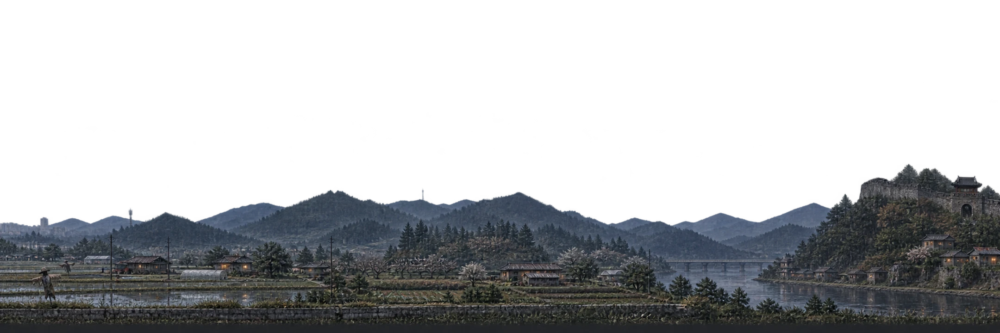
기존 큰 원본 재구성평야 사이 낮은 구릉이 가까워지고 강가 취락이 모인다. 산성은 원경을 덮지 않는다.
풍경 재생 →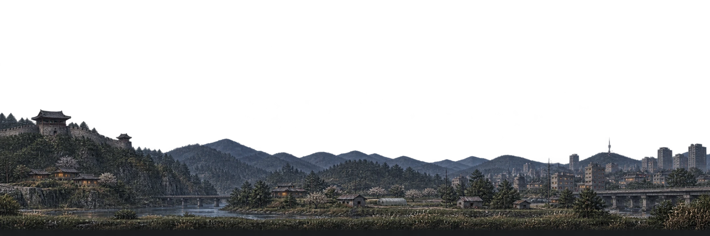
기존 큰 원본 재구성강변 저지대에서 완만한 구릉 사이 농지·취락으로 이어진다. 도로망과 실측 거리는 축약이다.
풍경 재생 →논밭 사이 취락이 촘촘해져 분지 외곽의 시설로 이어진다. 시가지는 천천히 늘린다.
풍경 재생 →과수원에서 강변 농지·분지 외곽으로 이어진다. 연구시설은 마지막에만 작은 군집으로 늘린다.
풍경 재생 →분지와 하천 저지대가 이어지고 외곽 농지·주거지가 섞인다. 두 도시 사이에 새 산맥을 끼우지 않는다.
풍경 재생 →농지와 낮은 물류시설 사이로 완만한 구릉이 이어진다. 주거 밀도는 천천히 변한다.
풍경 재생 →구릉 사이 들판이 넓은 평야로 열린다. 항만 명칭은 압축 설정이며 거대한 바다는 필수가 아니다.
풍경 재생 →같은 산골 숲과 과수지 사이 작은 온천 건물이 나타난다. 독립적인 관광 풍경으로 점프하지 않는다.
풍경 재생 →평야의 풀밭과 콘크리트 흔적이 논밭으로 이어진다. 활주로의 낮은 수평선을 유지한다.
풍경 재생 →무주와 같은 숲·바위 사이에 작은 터널 입구가 나타난다. 터널 하나가 지역 전체를 바꾸지 않는다.
풍경 재생 →인근 숲 능선에서 산골 과수원으로 시야가 열린다. 같은 산줄기를 다른 거리에서 본다.
풍경 재생 →천안 근교 농지에 작은 빈 상영판과 공터가 나타난다. 구릉은 그대로 유지한다.
풍경 재생 →농지·구릉을 따라 내륙 분지와 수변으로 이어진다. 호수는 연속된 지형 안에서 드러난다.
풍경 재생 →강 주변 저지대를 유지한 채 낮은 오래된 취락에서 계획도시 건물로 밀도가 달라진다.
풍경 재생 →하천과 구릉 사이 도시 외곽이 이어진다. 공주·청주 방향과도 같은 세종 지형 성격을 공유한다.
풍경 재생 →낮은 시가지에서 농경지·구릉을 거쳐 분지 외곽으로 이어진다. 한 가지 중부 내륙 색감을 유지한다.
풍경 재생 →문경 산자락의 케이블 시설은 숲에 작게 묻힌다. 깊이와 빛은 같은 골짜기 안에서 유지한다.
풍경 재생 →숲 고개를 벗어나 내륙 분지와 강변 농지가 열린다. 다음 도시로 그림을 교체하지 않는다.
풍경 재생 →산 사이 강과 호수가 이어지는 긴 수변 경관을 유지한다. 건물은 물가의 작은 취락 규모다.
풍경 재생 →내륙 수변과 농지를 지나 산자락 시가지가 늘어난다. 먼 둥근 능선이 전 구간 남는다.
풍경 재생 →깊은 강 골짜기에서 숲 고개를 거쳐 산자락 분지로 열린다. 높이 변화는 여러 겹의 산으로 연결한다.
풍경 재생 →산자락 취락에서 숲 능선과 작은 고지 개활지로 이어진다. 눈 덮인 암봉 대신 둥근 산줄기를 유지한다.
풍경 재생 →숲 능선이 조금씩 낮아지며 먼 해안 저지대가 열린다. 바다는 끝 쪽에서만 좁게 보인다.
풍경 재생 →산자락 시가지에서 완만한 구릉과 농지로 열린다. 먼 산의 색과 크기는 급히 바뀌지 않는다.
풍경 재생 →산업지 외곽이 농경지·분지 취락으로 느슨해진다. 왕릉은 낮은 둔덕 규모로 나타난다.
풍경 재생 →분지 농지에서 산지 연결부를 거쳐 도시 외곽으로 열린다. 두 분지 사이의 중간 지형을 남긴다.
풍경 재생 →내륙 농지와 낮은 구릉을 지나 해안 산업지가 늘어난다. 바다와 제철소가 한순간에 전경을 덮지 않는다.
풍경 재생 →모래해안·해송·낮은 취락이 오래 이어진다. 같은 바다 수평선 안에서 마을 밀도만 바뀐다.
풍경 재생 →동해 해안의 긴 마을·낮은 곶·모래해안이 반복된다. 도착 직전에만 산업시설이 조금씩 늘어난다.
풍경 재생 →수로와 논밭 사이 산업시설·아파트가 점진적으로 늘어난다. 평지의 넓이를 보존한다.
풍경 재생 →낮은 주거·작업장 사이에 아파트가 차츰 늘어난다. 같은 구릉과 수변 축을 길게 유지한다.
풍경 재생 →평택 들판의 일부가 낮은 패널 밭으로 바뀐다. 산·날씨·빛은 변하지 않는다.
풍경 재생 →연속된 시가지가 농경지·완만한 구릉·작은 작업장으로 느슨해진다. 가마 굴뚝은 작은 지역 단서다.
풍경 재생 →농지와 낮은 구릉을 지나 내륙 분지로 이어진다. 산을 급히 거대화하지 않는다.
풍경 재생 →공식 지형·수계 자료는 큰 지역 성격을 잡는 데 사용했습니다. 개별 도로·카메라 방향·폐허 건물은 게임을 위한 추론입니다. 가상 장소와 게임 거리도 현실 정보로 둔갑시키지 않았습니다.
생성 이미지와 원본 비교는 미술 검수이지 실제 게임 적용 검수가 아닙니다. 같은 도시의 도착→정차→다음 출발, 역방향·재접속·사건 제동·날씨·개조 합성은 승인 후 구현·검수해야 합니다.
한반도 산지축과 동해안·서남해안의 큰 지형 차이. 개별 도로 조망을 검증하지 않음.
낙동강 유역의 분지·하천 평야, 김해 삼각주와 하류 협곡 구간.
낙동강변 생활권과 남북 산림축.
전주 분지와 전주천·삼천이 연결되는 지형.
안성천·진위천 수계의 평택평야와 수원에서 이어지는 황구지천.
산지가 많은 단양과 남한강·충주호로 이어지는 수계.
동천·이사천과 연결된 순천만 하구·갈대 경관.
서남해안 갯벌과 간척 저지대의 큰 지형 특징.
대관령의 숲·소나무림과 고갯길. 특정 차량 도로의 조망 자료는 아님.
자료 확인: 2026-10-15. 새5장: builtin image_gen.imagegen, 정본4장 + 부산 후보 참조. 프롬프트·원본·출처 보존.